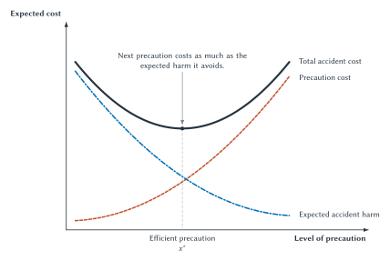

The Accident Before the Accident
A delivery truck speeds down a commercial street and strikes a legally parked car. The immediate legal questions seem straightforward. Did the driver owe a duty of care? Was speeding unreasonable? Did the speeding cause the collision? What damages did the owner suffer?
Economic analysis begins one step earlier. Before the collision, the trucking company could have trained its drivers, monitored speed, changed delivery schedules, maintained the brakes, or reduced the number of hurried trips. The car owner could have chosen an off-street garage, a different parking location, or no trip at all. Some of those precautions may be cheap. Others may cost more than the risk they reduce.
The accident is already over when a court sees it, but the legal rule faces forward. Drivers, vehicle owners, insurers, employers, pedestrians, and product manufacturers make choices while anticipating what will happen if harm occurs. Tort law changes those expected consequences.
A tort is a civil wrong for which law may provide a remedy outside the enforcement of a contract. At a principles level, tort law governs harms such as careless driving, unsafe premises, professional negligence, defective products, and some intentional injuries. Its details vary across jurisdictions, but its central economic problem is widely shared: people can impose accident risks on others without first making an agreement about precaution or compensation.
Chapter 4 showed that bargaining can reorganize rights when parties can identify one another, communicate, and enforce an agreement at acceptable cost. Most accident settings do not meet those conditions. A trucking company cannot bargain in advance with every driver, pedestrian, cyclist, customer, and property owner who might encounter one of its vehicles. The possible parties are too numerous, the eventual victim is unknown, and the relevant risk may not be understood until after harm occurs.
Tort law can therefore be understood as law for high-transaction-cost accident externalities. It establishes duties and consequences before the particular injurer and victim can bargain. The rule determines who initially bears a loss, which precautions become privately worthwhile, and whether risky activity expands or contracts.
The terms potential injurer and potential victim identify positions in the model. They do not settle moral blame. A potential victim may control an important precaution. A potential injurer may act carefully yet cause unavoidable harm. The economic task is to identify who can change the risk and at what cost.
Tort law may perform at least three related functions:
- Compensation transfers resources to a person who suffered harm.
- Deterrence changes incentives before future harms occur.
- Risk allocation determines who bears uncertain losses and who may insure against them.
These functions can reinforce one another, but they need not. Full compensation may weaken a victim’s incentive to take precaution. A rule that deters efficiently may fail to compensate because the defendant is insolvent. A low-cost insurance arrangement may spread risk well while leaving another institution to supply safety incentives.
The parked-car collision therefore raises a broader question than who pays this time. Which rule gives the relevant parties reasons to prevent future accidents without discouraging more valuable activity than the accidents are worth?
Expected Harm and the Social Cost of Accidents
Accidents are uncertain. A precaution usually does not guarantee safety; it changes the probability or magnitude of loss. The first step is therefore to convert a risk into an expected cost.
In symbols,
where
Suppose a delivery route has a 2 percent annual chance of producing a collision with an average loss of $25,000. Measured in dollars, the expected annual harm is:
A speed-monitoring system costing $200 per year reduces the probability to 0.5 percent. Expected harm falls to $125, a reduction of $375. Spending $200 to avoid $375 in expected harm creates an expected gain of $175.
That conclusion does not depend on whether an accident actually occurs during the year. The company could install the system and still experience a collision. It could reject the system and have a year without one. Economic evaluation compares the choices using the information available when they were made, not merely the outcome later observed.
Additional safety is not free. Drivers can slow down, factories can install guards, physicians can order more tests, and manufacturers can add redundant components. Each precaution consumes time, money, attention, or useful performance. Eliminating the final increment of risk may require abandoning the activity altogether.

Figure 7.1. Efficient precaution and the expected social cost of accidents. Additional precaution raises prevention cost but lowers expected accident harm. Total accident cost is minimized where the next increment of precaution costs approximately as much as the expected harm it avoids. The figure identifies an economic benchmark; it does not show which legal rule can reach it under real information and enforcement constraints.
The figure distinguishes accident prevention from accident elimination. At zero precaution, expected harm is high. As precaution increases, expected harm falls, but prevention cost rises. Their sum reaches a minimum before expected harm reaches zero.
The simple graph contains only precaution cost and expected accident harm. A fuller institutional comparison also counts the value lost when useful activity is reduced and the cost of administering the rule. Slower deliveries may reduce accidents but also delay medicine or food. A safer product design may cost more, weigh more, or perform less well. Courts, insurers, regulators, lawyers, experts, and enforcement systems also consume resources.
The economic objective is therefore not “maximum safety.” It is to minimize the total social cost of accidents: expected harm, precaution, lost benefits from reduced activity, and administration. Fairness, rights, distribution, and legitimacy remain important, but they are not automatically answered by finding that minimum.
Who Bears the Loss?
Return to the truck and parked car. Begin with a deliberately simple assumption: only the trucking company can reduce the risk, damages equal the victim’s loss, payment is certain, and everyone understands the risk.
Under no liability, the car owner bears the loss. The trucking company does not pay when its truck damages the parked car. Because the company receives the benefits of fast delivery but does not bear the expected collision loss, a safety investment may look privately unprofitable even when it is socially worthwhile.
Under strict liability, the trucking company pays for harm caused by the truck without the victim having to prove that the company failed to use reasonable care. With perfect compensation and collection, the company bears the expected accident loss. The $200 monitoring system now saves the company $375 in expected damages, so the company installs it.
Strict liability in this model does not mean that the company acted wickedly or intentionally. It is a method of assigning accident cost. The economic question is whether placing that cost on the company improves the choices that determine risk.
Now change the facts. Suppose the truck cannot easily reduce the risk, but the car owner can use a secure garage costing $50 that avoids $300 in expected damage. No liability gives the owner a reason to use the garage. Perfect strict liability removes that private benefit because the trucking company will fully compensate any loss. The preferred rule in this stripped-down model changes with the location of the useful precaution.
The example illustrates reciprocal harm. Avoiding the accident may require slowing trucks, moving parked cars, changing routes, or reducing deliveries. Protecting one use can burden another. The fact that the truck physically struck the car does not by itself identify the cheapest way to reduce expected harm.
Calabresi’s least-cost-avoider idea directs attention toward the party who can investigate, prevent, insure, or spread accident cost most effectively. That party may be the immediate actor, an employer, a manufacturer, an insurer, a victim, or another organization. Physical causation matters, but cost avoidance can extend beyond the person at the scene.
To predict incentives, identify the ultimate bearer of harm: the party left with the residual accident loss after liability and compensation operate. Under no liability, the victim is usually the ultimate bearer. Under strict liability with perfect compensation, the injurer is. The bearer has the strongest reason to account for the margins it controls.
This audit is more reliable than memorizing that one rule is “pro-victim” and another is “pro-defendant.” The same rule can perform differently when the cheapest precaution, available information, or ability to pay changes.
Negligence and the Hand Rule
Most accident settings involve more than the choice between no liability and strict liability. Negligence makes liability depend on whether the potential injurer failed to use legally required care. A person who meets the required level of care, often called due care, ordinarily avoids negligence liability even if an accident occurs.
This structure creates a threshold. Below due care, the injurer expects to bear damages. At or above due care, the residual loss generally remains with the victim. If the legal standard is set at efficient precaution and courts apply it accurately, the injurer can minimize private cost by meeting the standard.
The familiar Hand rule organizes that comparison. In its shorthand form,
where
Translated into the marginal language of Chapter 2, the marginal benefit of precaution is the reduction in expected accident harm, and the marginal cost of precaution is the additional burden of taking it. Additional precaution is efficient while marginal benefit exceeds marginal cost. Efficient precaution is reached near the point where the two are equal. That is the social benchmark. If a negligence standard sets due care near that point, exposure to liability for falling short can give the potential injurer a private incentive to reach the benchmark.
The marginal version is more useful than treating the formula as one all-or-nothing calculation. A company might efficiently install a backup sensor but not a third backup. A driver might efficiently reduce speed from 50 to 35 miles per hour near a school but not to 2 miles per hour. Each increment of precaution should be compared with the expected harm it avoids.
United States v. Carroll Towing
The Hand formula is associated with Judge Learned Hand’s 1947 opinion in United States v. Carroll Towing Co. The case arose after the mooring lines of barges in New York Harbor were adjusted, the barge Anna C broke free, struck a tanker’s propeller, took on water, and sank. The bargee responsible for the vessel had been absent during working hours without explanation.
Hand described the owner’s duty using three considerations: the probability the barge would break away, the gravity of the resulting loss, and the burden of having a bargee aboard. The opinion treated the absence as relevant to responsibility for the sinking loss. It did not establish that every negligence case can be solved with precise numbers.
The case endures because it makes the economic structure of reasonable care visible. Precaution is justified by the expected harm it prevents. Yet the symbols organize judgment rather than eliminate it. Courts still must identify feasible precautions, estimate risks, value losses, decide what information was available, and determine whether the defendant caused the legally relevant harm.
Rules and Standards
A fixed speed limit is a rule: it specifies conduct in advance with relative precision. “Drive reasonably under the circumstances” is a standard: it permits a decision-maker to consider weather, traffic, visibility, road design, and other context after the fact.
Rules can be easier to understand and enforce. They reduce the cost of deciding what conduct is required, but they may be overinclusive on an empty dry highway and underinclusive in a crowded snowstorm. Standards adapt to context, but they require more information and create uncertainty about how a later court will judge conduct.
Negligence often operates as a standard because efficient care depends on facts. Regulation can supply more specific rules, such as equipment requirements, inspection schedules, or speed limits. Real accident governance commonly combines both.
When Both Parties Can Take Care
The unilateral model is useful, but many accidents are bilateral: both potential injurers and potential victims can reduce risk. Drivers can slow down and pedestrians can look before crossing. Manufacturers can improve a product and consumers can follow instructions. A hospital can maintain equipment and a patient can disclose medications.
Consider the following invented driver-pedestrian example. The numbers isolate precaution incentives; they are not empirical accident estimates.
| Precautions taken | Precaution cost | Expected accident harm | Total expected cost |
|---|---|---|---|
| Neither party | $0 | $200 | $200 |
| Driver only | $50 | $80 | $130 |
| Pedestrian only | $20 | $120 | $140 |
| Both parties | $70 | $40 | $110 |
Table 7.1. A bilateral-precaution benchmark. Driver care costs $50, pedestrian care costs $20, and both precautions together minimize total expected cost at $110. The values omit activity levels, insurance, litigation, incomplete compensation, and court error.
Both parties taking care is efficient because $110 is the lowest total. The liability-rule audit shows why pure no liability and pure strict liability can each miss that result.
Under no liability, the pedestrian bears accident loss. Pedestrian care costs $20 and reduces expected harm from $200 to $120, so the pedestrian takes care. The driver does not bear the remaining harm and lacks the same private incentive. Predicted total expected cost is $140.
Under strict liability with perfect compensation, the driver bears accident loss. Driver care costs $50 and reduces expected harm from $200 to $80, so the driver takes care. The fully compensated pedestrian no longer receives the private benefit of the $20 precaution. Predicted total expected cost is $130.
Under negligence with the driver-care standard set accurately at $50, the driver takes care to avoid liability. Once the driver complies, the pedestrian bears the residual harm. Pedestrian care then costs $20 and reduces expected harm from $80 to $40. Both take care, and total expected cost falls to $110.
This result explains the economic appeal of negligence in bilateral accidents. The negligence threshold gives the driver a reason to take due care. Conditional on compliance, residual loss gives the pedestrian a reason to take care too.
Contributory and Comparative Negligence
Contributory negligence is an all-or-nothing plaintiff-fault rule. In its basic form, a victim who failed to use required care can be barred from recovery. The rule creates a liability cliff: meeting the victim-care standard preserves recovery, while falling short can eliminate it.
Under strict liability with a contributory-negligence defense in the numerical example, the pedestrian takes the $20 precaution to preserve recovery. Given a careful pedestrian, the driver expects to bear residual accident harm and takes the $50 precaution. The idealized result is again $110.
The result is not simply about blaming victims. The defense changes the victim’s expected price of care. Its all-or-nothing structure can create strong incentives, but it can also produce harsh outcomes and magnify mistakes about whether a standard was met.
Comparative negligence generally reduces recovery according to allocated fault rather than imposing a complete bar. It softens the liability cliff and can keep both parties financially interested in precaution. But dividing damages does not mechanically produce efficient behavior. The result depends on the standards, shares, information, court accuracy, and how strongly each party responds.
Contributory and comparative-negligence regimes vary across jurisdictions. The principles-level distinction is enough here: contributory negligence is an all-or-nothing defense, while comparative negligence divides loss according to assigned responsibility.
Precaution Is Not the Only Margin
A delivery driver may buckle a seat belt, obey a speed standard, and maintain the vehicle on every trip. The company still chooses how many deliveries to make, how far to travel, which routes to serve, and how tight to make the schedule. These are activity-level choices.
The distinction matters because a court can often observe whether a driver was speeding more easily than it can decide whether a company made too many low-value trips. A negligence rule may control observable care while leaving activity largely unpriced.
Consider an invented delivery-fleet example. Without due care, expected accident harm is $6 per mile. Due care costs $1 per mile and reduces expected harm to $2. Spending $1 to avoid $4 of expected harm is efficient under any chosen activity level.
The company is considering 2,000 optional miles that produce $4,000 in contribution before precaution and accident costs, or $2 per mile. With due care, each mile creates $2 of private contribution but costs society $1 in care and $2 in residual expected harm. The optional miles therefore lose $1 each, or $2,000 in total.
| Rule | Predicted care | Optional miles | Company’s payoff from optional miles | Social payoff from optional miles |
|---|---|---|---|---|
| No liability | No care | 2,000 | $4,000 | -$8,000 |
| Negligence with accurate due care | Due care | 2,000 | $2,000 | -$2,000 |
| Strict liability with full collection | Due care | 0 | $0 | $0 |
Table 7.2. Precaution and activity in an idealized delivery fleet. No liability leaves both precaution and accident harm outside the firm’s private calculation. Negligence induces due care, but a compliant firm does not bear residual harm and still adds low-value miles. Strict liability makes the firm compare each mile’s contribution with both precaution cost and residual expected harm.
Under no liability, the company receives $4,000 and bears neither the $12,000 in expected harm nor a legal care requirement, so it runs the routes without care. Under negligence, the company spends $2,000 on due care to avoid liability, but still earns a private $2,000 by adding the miles. Victims bear the $4,000 residual expected harm, so the optional routes reduce social value by $2,000. Under strict liability, the company anticipates $6,000 in care and residual accident cost and rejects routes that produce only $4,000.
This does not prove that strict liability is always superior. The example deliberately gives the firm control over both precaution and activity while giving victims no relevant margin. If customer choices, pedestrian behavior, or another victim activity matters, shifting all loss to the firm can weaken incentives elsewhere. Strict liability may also create more claims or difficult causation disputes.
The deeper lesson is that due care is not the same as an efficient activity level. A hospital may use reasonable care with every patient yet provide a treatment too often. A manufacturer may meet a design standard while selling too many units whose residual risk exceeds their marginal value. A negligence rule can work well on visible precautions and still miss an unobservable margin.
The basic liability rules can now be summarized. “Strong” means that the rule gives the identified party a substantial private stake under the model’s assumptions; it does not mean that behavior will be perfect in real institutions.
| Rule | Residual bearer in the basic model | Injurer precaution | Victim precaution | Principal activity implication |
|---|---|---|---|---|
| No liability | Victim | Weak | Strong | Victim internalizes own activity; injurer does not |
| Strict liability with perfect compensation | Injurer | Strong | Weak | Injurer internalizes own activity; victim does not |
| Negligence | Victim when injurer meets due care | Strong up to due care | Strong against residual loss | Injurer may comply yet engage in too much activity |
| Strict liability with contributory-negligence defense | Injurer when victim meets due care | Strong against residual loss | Strong up to due care | Victim may comply yet engage in too much activity |
| Comparative negligence | Divided according to assigned fault | Depends on standard and share | Depends on standard and share | Activity incentives are divided and may remain incomplete |
Table 7.3. Liability rules and affected margins. The table is a simplified incentive map, not a description of every jurisdiction. Its predictions assume rational response, correctly set standards, accurate adjudication, enforceable judgments, and compensation as stated.
No single row controls every margin. The rule that performs well depends on who has information, which precautions courts can observe, whose activity changes, and how expensive the rule is to administer.
From Ideal Models to Real Institutions
The models so far make strong assumptions: parties understand risk, standards are correct, harm is observable, causation is clear, damages equal loss, judgments are collected, and adjudication is free. Those assumptions reveal mechanisms. Relaxing them reveals institutional trade-offs.
Hindsight, Foreseeability, and Causation
Imagine that a surgeon selects a treatment with a 99 percent success rate after reviewing the available evidence. The rare adverse outcome occurs. The result is terrible, but the outcome alone does not prove that the earlier choice was unreasonable.
Foreseeability helps connect responsibility to risks an actor could identify, investigate, and change before acting. Causation connects the defendant’s conduct to the plaintiff’s harm. Both concepts have detailed legal doctrines beyond this chapter. Economically, they keep liability focused on choices capable of responding to the legal signal.
If a risk was unknowable and unavoidable, imposing damages may compensate a victim but cannot induce that actor to take the nonexistent precaution. It might still encourage research, insurance, or activity reduction, but those are different margins and should be named explicitly.
Causation also limits administrability. Many factors can contribute to disease, software failure, financial loss, or a multi-vehicle collision. Expanding liability whenever an actor was somewhere in the chain may increase precaution, but it can also price conduct that did not change the probability of harm, encourage costly litigation, and make insurance difficult. A narrow rule can make claims manageable while leaving real external costs unpriced.
Damages, Detection, and Ability to Pay
Compensatory damages aim to compensate recognized loss. They can also make potential injurers internalize expected harm. The match is imperfect. Medical expenses and damaged property may be documented, but pain, lost relationships, reduced life quality, and future consequences are difficult to measure. Money may not restore the victim to the pre-accident position.
Punitive damages serve a different purpose. At a principles level, one economic argument arises when harmful conduct is detected or successfully pursued only with some probability. If an actor causes $10,000 of harm but expects to pay compensatory damages only one-fourth of the time, expected liability is $2,500. A probability-adjusted award of $40,000 in the successful case would produce expected liability of $10,000.
That arithmetic identifies a deterrence problem, not an automatic legal multiplier. Courts may be uncertain about the probability of escape, defendants may be risk averse or insolvent, awards may be unpredictable, and actual punitive-damages law has independent legal constraints. The example belongs to the same expected-value logic as Chapter 2, but real doctrine is more complicated.
A judgment-proof defendant cannot pay the full harm. A small firm may impose a catastrophic risk exceeding its assets. Limited liability, bankruptcy, missing insurance, or an unidentified actor can leave victims uncompensated and make nominal strict liability a weak deterrent. Safety regulation, mandatory insurance, bonding, licensing, capitalization requirements, or responsibility assigned to a solvent organization may then become relevant alternatives.
Litigation cost creates another gap. A valid $500 claim may cost more than $500 to pursue. Causation experts may cost more than the expected recovery. Delay and uncertainty may discourage claims. Chapter 9 will study those problems directly. For now, the key point is that a legal right changes behavior only when parties expect it to be usable.
Court error matters differently across rules. Strict liability relies heavily on correct causation and damages. Negligence also requires a court to identify and evaluate precaution. A mistaken due-care standard can induce too little care, too much care, or wasteful efforts to document compliance.
These limitations do not show that tort law fails. They show why the correct comparison is not between a perfect liability rule and an imperfect alternative. Courts, regulators, insurers, firms, and private standards all make errors and incur costs.
Insurance, Firms, and Vicarious Liability
Liability assigns uncertain losses, and insurance reallocates them. A risk-averse driver may prefer a predictable premium to a small chance of a financially devastating judgment. An insurer can pool many risks and make aggregate losses more predictable.
Insurance can create moral hazard. If insurance pays every dollar, the insured may receive less benefit from precaution. But that is not the end of the analysis. Deductibles, coinsurance, exclusions, inspections, required safety practices, experience-rated premiums, cancellation, and subrogation can preserve or relocate incentives.
An insurer may possess loss data and safety expertise that an individual policyholder lacks. A commercial insurer can inspect electrical systems, require sprinklers, price fleet driving records, or help design claims procedures. Shifting some risk to the insurer may improve precaution if the insurer becomes the better monitor.
This example separates three questions that are easy to collapse: Does automation reduce measured collision risk? Who can observe and price the control mode? Who remains legally responsible? Insurance can begin pricing a safer mode before tort or traffic law formally reallocates responsibility. Tesla’s business ecosystem combines vehicle manufacturing, software updates, telemetry collection, and insurance provision, giving the organization unusual information and several margins on which to improve safety.
Moral hazard can therefore be a cost or, in a broader sense, part of a useful transfer of responsibility. The question is not whether the original actor bears every dollar. It is whether the final arrangement places meaningful incentives on the parties who can act on them.
Firms create a similar issue. Suppose an employee driving a delivery van injures a pedestrian while making deliveries. The employee controlled the steering wheel, but the employer selected the driver, set the schedule, chose the vehicle, designed training, installed monitoring, bought insurance, and can discipline repeated unsafe behavior.
Vicarious liability assigns responsibility to a principal for an agent’s actionable conduct based on their relationship. The legal details vary, including questions about the scope of employment. Its economic rationale can include selection, training, equipment, monitoring, risk spreading, insurance, and solvency.
Vicarious liability does not make direct actors irrelevant. Employers can use wages, discipline, promotion, monitoring, and internal rules to pass incentives inward. The institution places external responsibility on an organization capable of building a prevention system rather than asking every victim to recover from an employee with limited assets.
The same logic will return in Chapter 12 on corporations and Chapter 15 on platforms. Responsibility may be assigned upstream when an organization can structure many downstream choices at lower cost. But broader liability can also produce overmonitoring, discourage useful delegation, or cause organizations to avoid relationships they cannot perfectly control.
Products, Warnings, and Consumer Information
Products connect tort law to property, contract, insurance, and regulation. A consumer voluntarily buys a product, but meaningful bargaining over every safety feature, warning, remedy, and hidden risk may be impossible. Standard-form terms, technical complexity, low-probability harms, and limited information weaken the simple claim that the purchase contract settled everything.
At a principles level, products-liability claims in the United States may involve three broad defect categories:
- A manufacturing defect occurs when a particular unit departs from its intended design.
- A design defect concerns the safety of the product’s intended design.
- A warning defect concerns missing or inadequate risk information or instructions.
Claims may proceed through negligence, strict liability, or warranty theories depending on jurisdiction. There is no single national products-liability rule that makes producers automatically responsible for every injury involving a product.
Consider an e-bike battery that can overheat. The manufacturer can redesign the battery, improve quality control, add a shutdown sensor, supply warnings, collect failure data, recall affected units, and insure. The consumer can use the correct charger, avoid damaged batteries, follow storage instructions, and respond to warnings. A retailer or platform may control product screening, notice, records, and the ability to stop distribution.
The liability-rule audit asks which actor controls each margin. A manufacturing defect may be almost impossible for a consumer to detect but relatively cheap for the producer to prevent through quality control. A clear warning can improve user behavior when the user controls the relevant precaution. A warning that consumers cannot understand or act upon may transfer legal language without transferring useful information.
Product liability also affects price and insurance. If a producer bears expected injury costs, those costs can enter the product’s price. Buyers then purchase a combined product-and-compensation arrangement, which resembles mandatory insurance. That can spread risk and give the producer stronger safety incentives. It can also make careful consumers subsidize careless ones, reduce consumer precaution, and raise prices for buyers who prefer another risk arrangement.
Reputation, warranties, safety certification, reviews, repeat purchases, retailer standards, and contract can supplement formal liability. None is universally sufficient. Severe injuries may be rare enough that reputation updates slowly. Consumers may not observe the defect. A manufacturer may disappear before the harm becomes known. On the other hand, legal liability can be slow, expensive, and prone to error.
Products liability is therefore not merely a transfer from companies to injured consumers. It is a system affecting design, manufacturing, warnings, user precaution, information, prices, insurance, product choice, and market entry.
Courts or Regulators?
Tort liability is often described as ex post because a claim follows harm. Safety regulation is described as ex ante because an agency or legislature can require conduct before harm occurs. The distinction is useful, but it can mislead. Both institutions act prospectively by changing incentives for future choices.
Tort can use information revealed by a particular injury and can harness victims and lawyers as decentralized enforcers. It can adapt to unusual facts that a general rule did not anticipate. Its weaknesses include delay, litigation cost, causation problems, inconsistent decisions, insolvency, and the fact that someone must suffer harm before a claim arises.
Regulation can gather technical information across cases, inspect before harm, require insurance or testing, and impose relatively uniform standards. Its weaknesses include incomplete information, slow updating, rigid categories, monitoring costs, political influence, and errors imposed across an entire market.
Insurance and organizational control add other information channels. Insurers observe claims across policyholders and can price or inspect risk. Firms can monitor employees, products, and internal data. Mixed systems combine these institutions, gaining multiple safeguards while risking duplication, conflict, and unclear authority.
| Mechanism | Primary decision-maker | Characteristic information advantage | Characteristic limitation |
|---|---|---|---|
| Tort liability | Courts and claimants after harm | Case-specific injury and private enforcement | Causation, delay, litigation cost, insolvency |
| Safety regulation | Legislature or agency | Specialized and aggregated technical information | Rigidity, monitoring cost, political and approval error |
| Insurance and contract | Insurer and insured before loss | Pricing, claims, monitoring, and repeated data | Moral hazard, adverse selection, exclusions |
| Mixed governance | Courts, agencies, insurers, and firms | Multiple information channels and safeguards | Duplication, conflict, preemption, unclear responsibility |
Table 7.4. Comparing accident-governance institutions. Timing matters, but the stronger comparison asks what each institution can know, whom it can motivate, how it enforces decisions, and which errors it is likely to make.
Monsanto Co. v. Durnell
The Supreme Court’s 2026 decision in Monsanto Co. v. Durnell provides a compact example of conflict inside a mixed system. The dispute involved a state failure-to-warn claim concerning the herbicide Roundup and a label approved under the federal pesticide regime.
The Court held that the Federal Insecticide, Fungicide, and Rodenticide Act expressly preempted the failure-to-warn claim at issue because the claim would have required labeling in addition to or different from the federally approved label. The judgment below was reversed and the case remanded.
The majority and dissent disagreed about the relationship among the federal label, federal misbranding provisions, and state tort duties. That legal disagreement illustrates a recurring institutional problem: one decision-maker may value uniformity and expert review, while another emphasizes decentralized correction and new information.
Chapter 13 will examine agency incentives, capture, instrument choice, and government failure more fully. For now, the lesson is modest. “Courts or regulators” is rarely a choice between no governance and perfect governance. It is a comparison among institutions with different information, incentives, procedures, and error costs.
Autonomous Systems and Distributed Responsibility
Imagine an autonomous delivery vehicle that strikes a cyclist after a software update. Saying “the AI caused the accident” does not complete the liability-rule audit.
The software developer may control model design, testing, update procedures, and known failure modes. A hardware manufacturer may control sensors and braking systems. A fleet operator may choose routes, weather limits, maintenance, remote supervision, and the number of deployments. An owner may defer updates. A human user may ignore an alert. A platform may control access or monitoring. An insurer may possess claims data. A regulator may set testing, reporting, or operating requirements.
Each actor has different information and precaution margins. Some choices are visible before deployment; others emerge only from field data. Some failures can be traced to one component; others arise from interactions among software, hardware, environment, and human oversight.
The canonical framework still works:
- Identify the parties rather than treating the system as one actor.
- Identify precaution and activity margins for each party.
- Compare the cost of each precaution with the expected harm it avoids.
- Ask which actor bears residual loss under each feasible liability rule.
- Add causation, observability, insurance, solvency, administration, and regulatory alternatives.
Assigning liability to the fleet operator may encourage route limits and monitoring but provide weaker incentives for upstream design. Assigning liability to the developer may improve testing and updating but price harms the developer cannot observe or control. Component-based negligence may target identifiable failures but leave interaction risks unpriced. Shared or layered responsibility may preserve several incentives while increasing litigation and contracting costs.
No general current legal rule for “AI liability” resolves every setting, and this chapter does not invent one. Autonomous systems are the culmination of the tort framework because they make distributed control visible. The central question remains human and institutional: who can foresee, prevent, monitor, insure, update, or stop the risky activity at lowest total cost?
Big Picture
Tort law governs risks that strangers and loosely connected parties usually cannot bargain over before harm occurs. It assigns accident costs, defines standards of care, provides remedies, and helps determine which precautions and activities become privately worthwhile.
The simple model begins with expected harm and efficient precaution. No liability places residual loss on the victim. Strict liability places it on the injurer under perfect compensation. Negligence creates a due-care threshold. In bilateral accidents, negligence and victim-care defenses can preserve incentives for both sides under demanding assumptions.
Activity levels reveal why correct care does not settle the problem. A party may comply on every occasion while engaging in too much risky activity. Causation, foreseeability, damages, court error, litigation cost, insurance, insolvency, and organizational control then determine whether the theoretical signal reaches behavior.
Products and autonomous systems widen the set of actors. Manufacturers, users, firms, insurers, platforms, courts, and regulators each possess different information and prevention capabilities. The best feasible arrangement may combine liability, safety rules, insurance, contract, monitoring, and organizational governance.
Torts is therefore the clearest demonstration of law as an implicit price system, but it is not only a price system. It is also an information, compensation, enforcement, and risk-allocation system. Good analysis asks not merely who caused harm, but which institution can reduce the total cost of accidents while respecting the other values law is asked to serve.
Chapter Study Map
- Core ideas: expected harm, efficient precaution, total accident cost, least-cost avoidance, ultimate bearer of harm, negligence, strict liability, bilateral precaution, activity levels, compensation, deterrence, and risk allocation.
- Figure: interpret why precaution cost rises, expected accident harm falls, and total accident cost reaches a minimum before risk reaches zero.
- Tables: use the bilateral-precaution table to compare rules; use the activity-level example to distinguish due care from efficient scale; use the liability map to identify residual loss; use the institutional table to compare courts, regulators, insurers, and firms.
- Reasoning tasks: perform the four-step liability-rule audit, identify both parties’ margins, distinguish ex ante choice from ex post outcome, and compare imperfect institutions.
- Common mistakes: seeking zero risk, equating physical causation with least-cost avoidance, ignoring victim precaution, assuming due care solves activity, treating compensation as deterrence, or assuming nominal liability will be collected.
- Required applications: parked car and truck, driver and pedestrian, delivery-fleet activity, Carroll Towing, insurance and vicarious liability, Tesla’s telemetry-based FSD insurance pricing, products and warnings, Monsanto v. Durnell, and distributed responsibility in autonomous systems.
- Optional enrichment: mass torts, probabilistic causation, automobile no-fault systems, workers’ compensation, vaccine risks, and joint liability.
Review Questions
- Why can tort law be described as law for high-transaction-cost accident externalities?
- Distinguish compensation, deterrence, and risk allocation.
- What is expected harm? Explain every term in
. - Why does efficient accident law not seek to eliminate every accident?
- What is the difference between a potential injurer and a morally blameworthy actor?
- Define the ultimate bearer of harm.
- How do no liability and strict liability change precaution incentives in the unilateral model?
- What is a least-cost avoider, and why need it not be the person who physically caused the harm?
- State the four steps in the liability-rule audit.
- How does negligence differ from strict liability?
- Explain the Hand rule in words. Why is the marginal version more useful than a literal formula?
- What does United States v. Carroll Towing contribute to economic analysis of negligence?
- Compare a legal rule with a legal standard using speed regulation as an example.
- Why do pure no liability and pure strict liability fail to induce both precautions in the driver-pedestrian example?
- Distinguish contributory negligence from comparative negligence.
- What is an activity level? Why can a party take due care and still engage in too much risky activity?
- Why does a bad outcome not by itself prove that the earlier decision was negligent?
- How can insurance weaken, preserve, or relocate precaution incentives?
- What is the economic rationale for vicarious liability?
- Why is the choice between tort liability and safety regulation not captured fully by saying one is ex post and the other ex ante?
- In the Tesla FSD insurance example, why can insurance pricing change even while the human remains legally responsible for driving? Distinguish the safety evidence, monitoring mechanism, and legal rule.
Economic Reasoning Questions
- A warehouse can install a guard costing $8,000 that reduces annual injury probability from 5 percent to 1 percent. An injury would cause $150,000 in loss. Apply the liability-rule audit. Is the guard efficient? Predict the warehouse’s choice under no liability and strict liability with full collection.
- A homeowner’s tree may fall onto a neighbor’s garage. Pruning costs $300 and reduces expected damage by $700. The neighbor can move a vehicle out of the garage for an annual inconvenience cost of $100, reducing expected damage by another $250. Identify the efficient precaution combination and explain why bilateral precaution matters.
- Recalculate the driver-pedestrian example if pedestrian care costs $60 rather than $20. Which precautions are efficient? How do the predictions under no liability, strict liability, and negligence change?
- In the driver-pedestrian example, assume courts incorrectly set driver due care at a precaution costing $90 that produces no more safety than the $50 precaution. Predict the driver’s response and identify the standard-setting error cost.
- A ride service requires every driver to complete an effective safety checklist but does not charge drivers or the platform for residual accident harm. Explain why the checklist may control precaution without controlling hours driven or rides supplied.
- A chemical plant follows every specific regulatory requirement, but engineers privately know that an inexpensive additional valve would reduce a newly discovered risk. Compare how a fixed rule, a reasonable-care standard, and strict liability might use or fail to use that private information.
- A physician chooses a treatment that minimizes expected harm based on the best available evidence, but the patient experiences the rare adverse outcome. Explain the hindsight problem. What facts would be relevant to negligence analysis?
- A company causes $20,000 of harm each time it violates a safety rule, but only one violation in ten is detected and successfully pursued. Calculate the probability-adjusted award that would produce $20,000 in expected liability. Identify at least three reasons the arithmetic may not justify that award in practice.
- A startup creates an expected $5 million accident risk but has only $500,000 in assets and no insurance. Explain how the judgment-proof problem affects deterrence. Compare two institutional responses.
- An insurer covers a factory’s fire loss. It offers a lower premium if the factory installs sprinklers, accepts inspections, and retains a deductible. Explain how each term affects risk allocation and precaution.
- A delivery employee causes an accident after following an employer’s unrealistic schedule. Apply the liability-rule audit to the employee and employer. What prevention margins does each control, and what is the economic case for vicarious liability?
- A power tool includes a low-cost guard that users can remove to work faster. Compare producer design, warnings, user precaution, product price, and insurance under no producer liability and strict products liability. What additional facts would you need before choosing a rule?
- A federal regulator approves a uniform warning label, but later plaintiffs claim that state tort law requires stronger language. Identify the information and error-cost arguments for federal uniformity, state litigation, and mixed governance. Keep the scientific merits separate from the institutional comparison.
- An autonomous shuttle crashes after a sensor is obstructed, a software update is delayed, and the fleet operator disables a weather restriction. Identify at least four actors and their precaution or activity margins. Recommend a liability-and-regulation combination and state the assumptions driving your recommendation.
- An insurer observes that a supervised driving system has a lower collision rate and discounts miles driven with the system engaged, but traffic law continues to treat the human as the driver. Explain why the actuarial price and legal responsibility can diverge. What additional evidence would you want before concluding that the system itself caused the lower collision rate?
Law and Economics Lab
Design and Audit an Accident-Governance Regime
Choose a delivery fleet, consumer product, medical technology, recreational facility, e-scooter system, autonomous vehicle, AI-enabled service, or another risky activity approved by your instructor.
Your task is to design an accident-governance regime and then test it against realistic information and enforcement limits.
- Identify the actors. List potential injurers, victims, employers or principals, insurers, producers, platforms, and regulators.
- Identify the margins. For each relevant actor, identify precaution choices and activity-level choices. Distinguish visible from difficult-to-observe margins.
- Construct the benchmark. Estimate or create plausible precaution costs, accident probabilities, losses, and activity benefits. Explain every assumption.
- Find efficient behavior. Compare each additional precaution with the expected harm it avoids. Identify any activity whose marginal social cost exceeds its marginal benefit.
- Compare legal rules. Analyze no liability, negligence, strict liability, and a victim-care defense. For each rule, identify the ultimate bearer of harm and predict behavior.
- Add insurance and organization. Explain how deductibles, premiums, inspections, monitoring, employment rules, warranties, or platform controls change incentives.
- Add one regulatory alternative. Compare a safety standard, licensing rule, disclosure requirement, testing requirement, or operating restriction with tort liability.
- Stress-test enforcement. Change at least two assumptions involving causation, court error, incomplete damages, litigation cost, insolvency, or low detection probability.
- Separate objectives. Evaluate deterrence, compensation, risk spreading, fairness, legitimacy, and distribution separately before giving an overall recommendation.
- Audit an AI proposal. Ask an AI system to recommend a regime. Identify at least three hidden assumptions, verify every current legal claim using authoritative sources, and revise the proposal.
Conclude by recommending the best feasible institutional combination. Do not claim that one rule eliminates every accident or incentive problem. Explain why your design’s expected coordination benefits exceed its precaution, activity, information, enforcement, and error costs relative to the strongest realistic alternative.